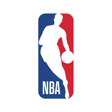

Cleveland Cavaliers
 The Cleveland Cavaliers, often referred to as the Cavs, are an American professional basketball team based in Cleveland, Ohio.National Basketball Association
Cleveland Cavalier's begun it's NBA journey as a member of the league's Eastern conference Central Division. The team plays as an expansion team in 1970, along with the Portland trail Blazers and Buffalo Braves. Home games were first held at cleveland Arena from 1970 to 1974, followed by the Richfield Coliseum from 1974 to 1994. Since 1994, the Cavs have played home games at the Quiken Loans Arena in downtown Cleveland.For more information about Cleveland Cavaliers visit
Cleveland CavaliersFor inqueries
Send MailForms